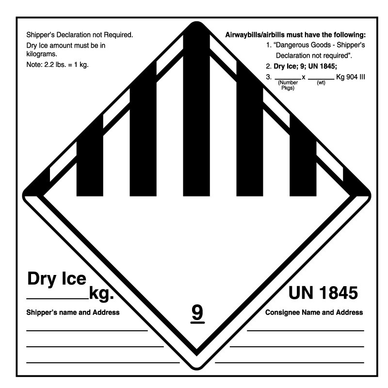

11. Acquiring, Shipping and Transporting Materials
Formal and informal material transfers are essential for research and can be made in different ways: company to community lab, community lab to community lab, university to community lab, individual researcher to individual researcher, and many more configurations.
In this chapter, we focus largely on acquiring, shipping, and transporting biological materials with a summary of regulations for chemicals. We strongly recommend not sharing chemicals between labs and avoiding taking responsibility for shipping and transporting them whenever possible because you have legal responsibilities from inception to final disposal (i.e., "cradle to grave").
Acquiring Biological Materials
Be mindful of where you source your lab materials. Caution must be taken to ensure that the materials are exactly what you think they are. Remember that you are legally responsible for custody of materials from the time they reach you and sometimes before—make sure to check the terms and conditions of the provider.
There are many reputable repositories and companies providing biological materials and chemicals commercially. Also, you can often approach researchers to obtain materials referenced in publications. It is common to share or deposit those materials so that other scientists can reproduce and expand upon the work and in some cases making materials available is a condition of publication.
Regardless of the method of acquiring materials, always make an effort to independently verify materials that enter the lab (e.g., through DNA sequencing of new strains or DNA plasmids).
Educational Suppliers
Various educational suppliers sell a range of safe bacterial, fungal, and algal species for as little as $10 each (watch out for shipping costs though). Some claim to only sell to schools and educators, although being an educational nonprofit with a business address (or a homeschooler) usually qualifies a community biology lab. It is highly advisable to ask any supplier exactly which strain they are selling. They should be able to provide an official strain name or a culture collection accession number. If not, consider buying from a different source.
Provided below are some useful educational suppliers and some of the organisms they sell:
- Carolina
- Pigmented Bacteria Set
- Slime Mold Cultures
- Plant Tissue Cultures
- Plus many otherliving organisms
- eNasco ("Live bacteria sold to schools only")
- Fisher Scientific (bacterial samples)
-
Flinn Scientific ("Orders may only be placed by certified science teachers and shipped to a certified school address.")
-
Bacterial Pigmentation Set: Serratia marcescens (red), Micrococcus luteus (yellow), Micrococcus roseus (pink)
-
Presque Isle Cultures ("All orders must be submitted on an official institutional purchase order.")
-
Sargent-Welch ("can only be purchased by approved Shipping Accounts")
-
Ward's Natural Science ("can only be purchased by approved Shipping Accounts"—community labs have successfully applied for one)
- Pigmented Bacteria Set
Cheesemaking, Brewing, and Other Sourcing Options
A number of cheesemaking or brewing bacteria, yeasts, and molds may be purchased online, sometimes in a convenient freeze-dried form. This may be one of the cheapest ways to put together a large collection of safe cultures with interesting properties.
Biotech Companies
Genetic engineering often utilizes strains of E. coli, yeast, Pichia pastoris, or other organisms that have been optimized for cloning or protein expression (e.g., knocking out protease genes that could interfere with high protein production). These genetic engineering strains are typically sold by biotech companies for a significant markup, often as competent cells in small aliquots ready for a transformation reaction. Check the fine-print: some of these commercial strains also carry licensing restrictions on what can be done with them, including prohibiting redistribution and commercial use. Most companies will not sell to individuals, and your organization will need to provide a business address, and sometimes proof of non-profit or company status. Through networking, it may be possible to obtain the workhorse strains, such as E. coli BL21 for free from a university lab or other resource.
Academic Labs
Academic labs are expected to share research materials with other researchers, as part of the normal lab etiquette in life sciences. Indeed, many scientific journals require authors to share research materials associated with a publication upon request. Try contacting the head of the lab, the lab manager, or the first or last author on a paper, and ask them kindly whether they would be willing to share their strains and plasmids with you. You may want to include how you will be using these materials, to assure them that you are not trying to scoop them on ongoing research. Many universities will ask you to sign a Material Transfer Agreement (MTA), although some researchers may skip this if you deal with them directly.
Not all academic researchers are equally conscientious when it comes to biosafety, and some microbiologists can be particularly nonchalant. Some questions you may want to ask from your academic collaborators include:
- Is this a Risk Group 1 organism, and if so, what evidence did you base this assignment on?
- Has this organism been submitted to a culture collection, and if so, what RG did they assign to it?
- Was this organism isolated in a BSL-2 lab?
- Do you have any sequence data for this organism, and if so, how far is it from any known pathogens? If they're not sure, be sure to ask them to provide the sequence.
Other Community Labs and Biohackers
When acquiring strains from a commercial supplier, you can assume there has been some amount of formal quality control on the product you are buying. When dealing with fellow community labs, you only have the word of the person you're exchanging materials with. Not all community labs will have the same standards when it comes to biosafety, so the more information you can get to document the identity and provenance of the strains, the better!
If you are getting a commercial strain from a community lab, ask them for the exact strain ID of the organism, and if possible a copy of whatever paperwork came with the strain from the original supplier. If this lab was not the one that acquired the strain in the first place, ask them where they got it from. Also ask for any sequence data (e.g., 16S) they may have available on this strain. If your source has little or no information on the strain, or if you have any uncertainty regarding its identity or safety, we strongly recommend you take a pass, and try to find another source.
If the lab you hope to get the strain from isolated it themselves, they should be able to provide you at a minimum with a DNA sequence based identification, and a risk assessment as outlined in Chapter 14 - Working with Microbes. If they cannot provide you with that information, you are better off finding another source instead of risking bringing in a potentially hazardous organism.
Culture Collections
There are many stock centers for organisms, chemicals, and other materials like DNA. Stock centers may require different information depending on local, state, and federal regulations, so there may be some hurdles along the way. Be patient with the process and courteous when working with the stock center.
When professional labs need a new bacterial strain, they will often turn to one of the very large culture collections such as the American Type Culture Collection (ATCC). Unfortunately, that often also means paying "professional" rates, but there are definitely some deals to be found.
- American Type Culture Collection (ATCC): ATCC is a private, not-for-profit biological resource center focusing on standard reference microorganisms, cell lines, and other materials for life sciences research. Non-profit rates are typically around $300 for a strain, but some type strains are only around $50.
- NRRL ARS Strain Collection: NRRL offers 24 strains per year FREE (+shipping). NRRL also has a large 'Patent collection' not listed in the online catalog, but which can be ordered if the NRRL number is provided from a patent or paper.
The following links provide more culture collections to explore.
| DNA Plasmids Addgene (Global)
Microbial Culture Collection Resources Culture Collections Information Worldwide (Global)United States Culture Collections Network (U.S.)Global Catalogue of Microorganisms (Global) | Animals/Plants Drosophila Bloomington Drosophila Stock Center (US) Plants National Germplasm Resources Lab (USA/ARS) Fish Xiphophorus Genetic Stock Center (U.S.)Zebrafish International Resource Center (Global) Mice and Rats How to Find Mutant Mouse Strains (Global)International Mouse Strain Resources (Global) | | --- | --- |
Providing Information to Culture Collections
All stock centers require information before you can order stocks and you should fill out their forms as best you can. As many are not used to working with community labs, it is likely you will encounter questions you can't answer. Don't be afraid to ask for guidance on how to proceed. Many stock centers have programs that support education. They are often flexible when working with schools, museums, and science centers. Information requested may include:
- Contact person (they might ask for their professional degree or experience)
- Account address (often require a commercial address and will not deliver to a residential address)
- EIN—Employer Identification Number or similar tax ID number
- DUNS—Dun and Bradstreet ID number for Federal Grants (U.S. only)
- Business license or company/non-profit information
- State or local tax information
- Evidence of relevant permits (GMO, BSL level)
- Evidence that you have appropriate facilities and safety policies in place to handle the material
- Insurance certificates
- Name of lab director who can sign material transfer agreements
- Rental agreement
You might need to apply for permission from them to receive materials. Have resources ready to prove that you are a reputable organization with a public mission. For example, BioCurious has had several instances where the directors leveraged their media attention to educate stock centers about the lab's public mission to further education and job retraining.
Acquiring Chemical Reagents
As recommended in Chapter 10 - Chemical Safety, all new chemicals should be approved by the safety team *before* being ordered, unless they are already on a "White List" of chemicals pre-approved by the lab. We recommend adopting an ordering system that allows some checking before an order is placed. For example, Counter Culture Labs uses Quartzy for almost all ordering, which has catalogs for all the major reagent suppliers, and allows separate roles for who may request an order, who may approve an order, and who can actually pay for an order.
Before ordering new chemicals, check to see if the chemical is available elsewhere, or if you already have some in the lab and could use, barter, or pay for what you need. If you have to order it, estimate the amount of chemical required for each experiment and order only what is necessary. Also consider whether the concentrated chemical is needed or if a pre-diluted form may be safer and more convenient. Excess chemicals are very expensive to dispose of and can cause a hazard if stored too long. Don't be tempted by the "better value" of a container that is larger than necessary because the cost of disposing of the excess is likely to outweigh the savings.
Most chemical suppliers in the U.S. are happy to sell standard lab reagents to anyone with a credit card and a business address, but using a residential address or telling them outright that you are a community lab, DIY lab, or biohackerspace may raise red flags with some suppliers. Shop around. Very few reagents are sold by only a single supplier, and reagent prices can vary significantly between suppliers.
Much like biological materials, you may also be able to request chemicals from academic labs, e.g., new fluorescent dyes, probes. In this case you may need to complete a material transfer agreement (see below).
Material Transfer Agreements
Once you are ready to receive materials from another organization you may need to sign a Material Transfer Agreement (MTA), which is a contract that determines how you can use the material. The agreement sets forth the terms of the transfer and the boundaries of what you can and cannot do within the scope of the agreement. This allows researchers to build on others research but also give credit to others who laid the groundwork for their discoveries. The restrictions depend on the organization providing the material.
Some of the common areas in the agreement include:
- Attribution : How to acknowledge the provider of the material in publications, talks, and other output.
- Reuse : Whether it is possible to transfer to another group or individual.
- Access : Who can access the technology. This could be restricted to named individuals or much more open.
- Ownership of patents or new IP derived from the materials: This might include first right of refusal for IP developed on the materials.
- Restrictions on the type of work that can be carried out with the material : Companies may do this to avoid competition with the provider.
- NDA (Non-disclosure agreement): This could restrict you from talking about the material characteristics, associated trade secrets, even the fact that you are working on this material.
- The term: The time length of the agreement.
- Jurisdiction : Where and how violations will be legally determined (court or arbitration) and the jurisdiction.
- Disposal: Methods of destruction of materials.
In theory, transfer terms are open to discussion but in practice most stock centers and universities will use the Universal Biological MTA (UB-MTA) or a more restrictive form which prohibits redistribution of the material to another organization (such as another community lab) and also its commercial use. The purpose of the UB-MTA is to simplify the legal process and cut down on the transaction costs of completing MTAs.
In the future, some centers may start using the OpenMTA, which is a standard agreement that explicitly allows redistribution and commercial use. If you plan to distribute novel materials or DNA from your community lab and want to ensure that other labs and researchers can use, reuse, and redistribute those with explicit permission, we recommend that you become a signatory to the OpenMTA.
As MTAs are a legal contract, the person who signs an MTA on behalf of your community lab must legally be able to sign contracts on behalf of the organization. Usually, they will be a lab director, a board member, or an officially designated representative. Many community labs sign MTA's on behalf of their members with the lab acting as recipient organization and the member as "Principal Investigator." However, if a member has their own company, you might want to encourage them to create their own account with the stock centers.
A specific reason for this is that your community lab will be held liable for any breaches of the contract including if that member went on to use that material for commercial purposes or redistributed it to another organization. This could lead to legal action by the material provider against your community lab, a court case, and fines.
For more details on the terms of different standard MTAs, consult the table below and the MTA resources on the Association of University Technology Managers (AUTM) website. UB-MTA is very common for publicly funded, not-for-profit and academic providers but commercial suppliers will likely have their own custom MTAs, so always read the terms and conditions thoroughly before you sign and seek (formal or informal) legal advice if you don't understand something.
If you send material out of your lab to other labs, ensure that you are permitted to do so under the incoming MTA that you signed. You may also choose to use an MTA for outgoing material to ensure that the recipients have a clear paper trail on what they are allowed to do with it and to limit your liability in terms of the material working in the way you describe (a no warranties clause).
| Terms of Transfer | UBMTA (1995) | SLA(1999) | Science Commons(2005-9) | OpenMTA (2018) |
|---|---|---|---|---|
| Academic or non-profit only | Yes | No | No | No |
| Use for research and teaching | Yes | Yes | Yes | Yes |
| Use for commercial purposes | No | No | Varies | Yes |
| Distribution of materials or derivatives | No | No | No | Yes |
| Fees for preparation and distribution | Yes | Yes | Yes | Yes |
| Fees for royalties | No | No | Varies | No |
| Compliance with laws and regulations | Yes | Yes | Yes | Yes |
| Ease of use internationally | No | Yes | Varies | Yes |
| No warranty (e.g., third party rights) | Yes | Yes | Yes | Yes |
| Recipient assumes liability | Yes | Yes | Yes | Yes |
| Recipient indemnifies Provider | No | No | Varies | No |
| Attribution | Yes | Yes | Yes | Yes |
Introduction to Shipping and Transporting Biological and Chemical Materials
When shipping or transporting biological, chemical, and other lab materials it is important to consider the nature of the materials being shipped, typical storage conditions, the hazards involved, and the shipping method. By shipping we mean packaging and sending the goods via a courier or postal service; by transport we mean packaging and moving the goods yourself. In general the same precautions and packaging requirements apply to each and you should consider references to shipping in this section to cover both scenarios unless otherwise stated.
The main regulatory distinction is between hazardous and non-hazardous goods , but there are other regulations like research permits, lab permissions, import/export permits, and also customs and quarantine processes to consider depending on what you are shipping or transporting, how it is traveling, and where it is going.
Shipping regulations are complex and special attention should be paid to local details. Shippers in the U.S. can be fined from $250 to $500,000 for improper shipping and carriers can refuse improperly packed packages, so do what you can to avoid unnecessary expense or delays.
You should also consider that in most countries you are legally responsible for the final disposal of your material (see more in Waste Disposal) (e.g., if you contract a service to remove your chemical or biological waste and this is later found to be dumped on the side of the road then you are responsible, not the contractor). This means you also need to be sure of the reliability of your shipping provider and the person to whom you are shipping as they will then be disposing of the material.
The following sections will help get you started with some high-level information and where to go for extra details.
Methods of Shipping and Transporting
| A few key points: - Do NOT carry biological materials on a plane—penalties can be severe. - The simplest way to ship plasmids, DNA, and Risk Group 1 natural and GM cultures is to spot them on filter paper, wrap in aluminum foil, enclose in a ziplock bag, and send by courier or regular mail (if in U.S., otherwise check local regulations) accompanied by a cover letter. | | --- |
Ground Shipping via Courier
We recommend shipping any hazardous or regulated materials via a reputable courier who has staff trained to deal with them and to advise on any special requirements e.g., FedEx, DHL, UPS.
All couriers will have lists of allowed materials. You may have to shop around for one that will meet your needs. There are specialist couriers for biological samples which may be helpful if shipping on dry ice or with other special requirements, e.g., World Courier.
In the U.S., ground shipping is regulated by the U.S. Department of Transportation (DOT).
Be aware that not all domestic shipments only travel by ground! Check with the courier as to whether you also need to follow the rules forAir Shipping via Courier.
Ground Shipping via the Postal Service
U.S.: Most dangerous goods are NOT permitted in the USPS postal mail but many biological agents and materials other than Category A infectious organisms can be sent via 1st class, Priority, or Express Mail (see USPS regulations).
Europe: Most dangerous goods are NOT permitted in the standard mail but check local services.
Personal Ground Transport
We do not recommend that you transport any hazardous biological or chemical materials personally by foot, bike, public transport, or in personal vehicles because U.S. DOT transport regulations apply when goods are transported on the public highway by any means.
If you do, then definitely don't just "put it in the car and move it." You must follow all standard shipping regulations, packaging, and labeling requirements described in the hazardous good shipping sections below. In the U.S., you must also be DOT-trained and certified to supervise the transport of hazardous goods.
If you decide to self-transport:
- Keep hazardous material locked in the trunk.
- Carry two copies of relevant documentation, e.g., shipping declaration, headed paper with description of specimens, intended use, place of origin and destination, contact details of sender and recipient, and emergency contact. Keep one on the package and one with the driver.
- If transporting regulated infectious substances, then stay with the vehicle at all times (at a minimum, always keep the vehicle within eyesight).
- Bring two people if driving long distances.
- Let other people know your itinerary and bring a cell phone in case you run into any problems.
Bear in mind that if you use public transport you are likely to be breaking the transport company rules on transporting hazardous substances and your car insurance is unlikely by default to cover transport of hazardous goods in your personal car.
There are no regulations against transporting non-hazardous goods by ground transport but be aware of other regulations and permit requirements. We recommend still following all packaging and labelling guidelines including triple-packaging for biological materials (see Packaging and Containment). If there is an accident, it's very important that anything you are carrying is identifiable by first responders to avoid a major incident.
The largest exception to self transport is "Materials for Trade" (49 CFR Section 173.6), which are small quantities of hazardous materials that can be purchased in at local vendor and transported without a DOT oversite. These are intended to be locally used consumer commodities, for example, gasoline, pool chemicals, rubbing alcohol, paint, drain cleaner, acetone, diagnostic specimens, bleach, and propane. Check with your local regulations and relevant authorities.
In the U.S., under the "Very Small Quantity Generator" (VSQG) program, hazardous chemicals and waste can be transported to disposal locations under "Materials of Trade" exemption. However, many states have different regulations on what constitutes proper shipment; therefore, it is advised to check your local laws. Some localities require you follow proper packaging, labeling instructions, and relevant paperwork, EPA permit, waste manifest, and possibly the VSQG paperwork. For examples, see Minnesota, Massachusetts,New York, and general EPA guidence.
Air Shipping via Courier
We recommend shipping any hazardous or regulated materials by air via a reputable courier who has staff trained to deal with them and to advise on any special requirements (e.g., FedEx, DHL, UPS). Not all materials can be shipped by air. For example, genetically modified organisms and animals that contain them that are known or suspected of being dangerous to humans, animals, or the environment must not be transported by air unless they are exempted by the countries concerned.
The International Civil Aviation Organization (ICAO) publishes the "Technical Instructions for the Safe Transport of Dangerous Goods by Air," which are the legally binding international regulations, but most airlines follow the International Air Transport Association (IATA) Dangerous Goods Regulations (DGR) that add some further restrictions. For domestic flights, national civil aviation authorities apply national regulations. In the U.S., you should also check the TSA regulations and Federal Aviation Agency for the national rules. Bear in mind that these international and national regulations are the minimum requirements, and individual airlines may be stricter.
Carry-on Transport
Carrying hazardous biological or chemical materials on an aircraft as a passenger is generally always prohibited. In principle, non-hazardous goods are permitted, but we recommend packaging all biological and chemical materials (whether they are hazardous or not) according to IATA requirements and using a reputable courier. Don't take the risk of getting caught with suspicious materials! It is difficult to distinguish between non-hazardous and hazardous lab samples, and concern over bioterrorism is heightened. In the best case, your journey will be delayed while you explain yourself; in the worst case, you could be refused passage by the airline, fined, and/or detained for breaching regulations.
Shipping and Transporting Non-Hazardous Materials
Hazardous materials typically cover the following categories of materials, and anything falling outside of that is considered non-hazardous (but always check the DOT, IATA, and UN guidelines):
- Explosives
- Gases including liquid nitrogen
- Flammable liquids including alcohol and formaldehyde
- Flammable solids
- Oxidizing substances and organic peroxides
- Toxic and infectious substances infectious agents and biological substances
- Radioactive materials
- Corrosives
- Miscellaneous dangerous goods, e.g., dry ice, GMOs, and formalin
Below are common non-hazardous materials that you may wish to transport or ship. Be mindful that just because something is non-hazardous and does not fall under DOT or IATA regulations does not mean shipment is regulation free! You may need to consider import and export permits, research permits, and other regulations. More information is provided later in the chapter.
Lab Equipment
Typically there are no restrictions on shipping or transporting lab equipment, but you should ensure that it has been biologically and chemically decontaminated before it leaves the lab and ideally attach a decontamination certification (for more information on decontaminating equipment see Equipment Safety).
There are some U.S. export restrictions on lab equipment, but primarily the restrictions are for large-scale bioprocessing, e.g., fermentation vessels (\> 20 liters), steam sterilizable freeze drying equipment, Class III biological safety cabinets. We do not anticipate these would affect community labs, but be sure to check the Chemical and Biological Controls Division (CBC) lists if in doubt. You would need to apply for an export license if you want to ship something on that list outside of the U.S.
Non-Hazardous Chemicals
If chemicals or reagents are not classified as hazardous under the UN Recommendations on the Transport of Dangerous Goods (e.g., agarose, powdered microbiological media, and some buffer salts), then they are usually not regulated for transport unless there are special local regulations.
However, you should still package them securely, ensuring any liquids will not leak, fully label all items, and include a cover letter with an itemized list of the package contents. Try to ship all chemicals in their original packaging. If you have no choice but to repackage into new containers, then fully label them in such a way that labels cannot fall off or get obscured in the event of a leak.
Environmental Samples
Environmental samples (including food and water samples), which are not considered to pose a significant risk of infection are not regulated, but you should package them to avoid leaks. We recommend following the triple-packing method (see Packaging and Containment).
Non-Infectious, Non-GM Microorganisms
Micro-organisms that are non-GM and not infectious for humans or animals are not subject to transport regulations. However, they must always be packaged in such a way that they will not leak in transit so we recommend that you:
- Use the triple-packing method (see Packaging and Containment).
- Ensure that full information on the organism and why it is exempt is included in a cover letter packed between the secondary container and the outer pack.
- Check permit and GM regulatory requirements for imports and exports if shipping internationally.
Non-infectious GM Organisms
The International Air Transport Association (IATA) defines GM organisms as follows:
Genetically modified microorganisms (GMMOs) and genetically modified organisms (GMOs) are microorganisms and organisms in which genetic material has been purposely altered through genetic engineering in a way that does not occur naturally.
For ground transport in the U.S., DOT regulations do not apply to any GMOs unless they are classified as infectious substances, but IATA regulations cover more scenarios.
For air travel, GM microorganisms which are non-infectious and cannot "alter animals, plants, or microbiological substances in a way not normally the result of natural reproduction" are NOT regulated as dangerous goods by IATA. This includes Risk Group 1 host organisms that present no significant risks to human, animal, or environmental health AND contain a non-transmissible vector plasmid that is not able to modify other organisms. For example, an E.coli K-12 derivative containing a non-transmissible plasmid vector expressing green fluorescent protein would not fall under transport regulations. However, you should still:
- Use the triple-packing method (see Packaging and Containment).
- Ensure that full information on the organism and why it is exempt is included in acover letter packed between the secondary container and the outer pack.
- Check permit and GM regulatory requirements for imports and exports if shipping across state lines or internationally.
If the GMO is infectious, then it is classified as a Category A Biological Substance (UN2814 or UN 2900) or a Category B Biological Substance (UN3373) and it is subject to regulations based on its infectious status (see Infectious Substances).
If the GMO is non-infectious but contains a transmissible vector plasmid or is otherwise able to modify other organisms, then it is classified as a Genetically Modified Organisms (UN3245) and is subject to regulation,
DNA, Cell Lines, and Other Biological Materials
DNA, RNA, plasmids (non-infectious), primers, purified proteins, cell extracts, non-infectious cells (cell-lines) or tissue cultures, antibodies, and similar materials are typically not regulated for ground or air transport so long as they:
- Do not contain infectious substances or substances that are likely to cause disease in humans or animals. Plasmid DNA vectors which require containment level 2 or above for safe handling in the lab must be classified as an infectious substance.
- Are in a form where any pathogens present have been neutralized or inactivated such that they no longer pose a health risk.
- Are not toxins.
In all cases you should still:
- Use the triple-packing method if shipping liquids or agar (see Packaging and Containment).
- Ensure that full information on the organism and why it is exempt is included in a cover letter packed between the secondary container and the outer pack.
- Check permit and GM regulatory requirements for imports and exports if shipping across state lines or internationally.
Exempt Human/Animal Specimens
Specimens which have a minimal likelihood of containing pathogens are classified as "Exempt" from regulation if they are transported by an IATA courier (or the United States Postal Service). This includes saliva for DNA testing and many other materials sent for diagnostic tests unrelated to infectious disease (including, but not limited to, secreta, excreta, blood, and tissue).
IATA and USPS still require that exempt specimens are properly triple packaged in the same way as a hazardous biological substance (see sections below) and the outer packages are clearly marked as "Exempt Human Specimen" or "Exempt Animal Specimen". USDOT does not require this labelling for ground transport so check with individual couriers on their policies.
Shipping and Transporting Hazardous Materials
Training for Shipping of Hazardous Materials
Any employer or individual who offers a hazardous material for shipment by air travel must be formally trained in International Air Transport Association (IATA) regulations. Additionally in the U.S., anyone offering a hazardous material for shipment by any mode of commercial transportation must be trained in U.S. Department of Transportation (DOT) regulations. This requirement also cover anyone undertaking "pre-transportation activities" such as:
- Determining the hazard class of a hazardous material.
- Selecting a hazardous materials packaging.
- Filling a hazardous materials packaging, including a bulk packaging.
- Securing a closure on a filled or partially filled hazardous materials package or container or on a package or container containing a residue of a hazardous material.
- Marking a package to indicate that it contains a hazardous material.
- Labeling a package to indicate that it contains a hazardous material.
- Preparing a shipping paper.
Basically, all aspects of offering, preparing for transport, packaging, or transporting require mandatory certified training:
- Every 3 years under US DOT regulations.
- Every 2 years under ICAO/IATA.
- And as often as the regulations change.
You can find accredited training centres via the International Air Transport Association (IATA) and U.S. Department of Transportation (DOT).
Once trained, we highly recommend referring to shipping regulations, e.g., the IATA Purple Book and UN Recommendations on the Transport of Dangerous Goods. These specify requirements for: labeling, packaging materials, containment (and secondary containment), and restrictions on flights. Details should still be cross-checked with specific shipping companies and airlines as policies could differ.
Shipping Hazardous Biological Materials
Infectious Substances
Infectious Substances are substances known to contain, or reasonably expected to contain, pathogens. Pathogens are defined as microorganisms (including bacteria, viruses, rickettsia, parasites, and fungi) and other agents such as prions, which can cause disease in humans or animals.
Category A Infectious Substances (including UN2814 Infectious Substance Affecting Humans & UN2900 Infectious Substance, Affecting Animals) are capable of causing permanent disability, or life-threatening or fatal disease in otherwise healthy humans or animals. (This roughly corresponds to Risk Group 3-4.)
Category B Infectious Substances (UN3373) are known or suspected of containing biological agents that can cause disease, but generally the disease is treatable and not life threatening with proper medical intervention. (This roughly corresponds to Risk Group 2.)
As we do not anticipate that community labs will ship any infectious substances and strongly advise against doing so, no further guidance will be provided in this chapter.
Genetically Modified Organisms (UN3245)
If a GMO is not infectious and is not capable of altering animals, plants, or microbiological substances in a way not normally the result of natural reproduction, then it is not subject to the provisions of the regulations (see Non-infectious GM Organisms).
GMOs are only considered hazardous if they fit into one of four IATA Categories:
- Category A infectious substance - Class 6.2 (UN2814 or UN 2900): follow guidelines for this classification as infection status is given priority to GM status.
- Meets the definition of Category B Biological Substance - Class 6.2 (UN3373): follow guidelines for this classification as infection status is given priority to GM status.
If a GMO does not meet the infectious substance definition but can alter animals, plants, or microbiological substances in a way not normally the result of natural reproduction (e.g., Agrobacterium), then it is Class 9 (other dangerous goods) UN3245 and should be triple packaged and labeled as such on the packaging, waybill, and shipping declaration.
Shipping Hazardous Chemical Materials
Chemicals or reagents classified as hazardous under the UN Recommendations on the Transport of Dangerous Goods include but are not limited to:
- Explosives
- Gases including liquid nitrogen
- Flammable liquids including alcohol and formaldehyde
- Flammable solids
- Oxidizing substances and organic peroxides
- Toxic and infectious substances infectious agents biological substances
- Radioactive materials
- Corrosives
- Miscellaneous dangerous goods, e.g., dry ice, GMOs, and formalin
We do not recommend shipping any hazardous chemical materials. If you choose to do so, then remember that the person doing the shipping must have been DOT-trained to ship hazardous goods in or from the U.S. and IATA-trained to ship them by air.
A common requirement for community labs might be shipping small quantities or dry ice or preservatives with biological samples, and we describe the regulations for this in more detail below. Where possible, use non-hazardous chemical preservatives such as:
- 10% Formalin (3.75% formaldehyde concentration)
- Formaldehyde (\<10% concentration of formaldehyde)
- Phosphate-buffered saline solutions
Formaldehyde
Formaldehyde solution classifications depend on concentration:
- \> 25% is shipped as "UN1198, Formaldehyde solutions, flammable, 3, (8), PG III" because it is corrosive and flammable. It is regulated for transport by land and air unless the quantity is \< 30 ml per vial and 500 ml per package, in which case it is excepted from regulation but requires an "Excepted Quantities Label."
- 10–24.9% is shipped as "UN3334, Aviation regulated liquid, n.o.s. (Formaldehyde), 9" when shipped by air but is not regulated by land and may be exempt based on quantity (see above).
- \<10% or 10% (neutral buffered) formalin(made from a 10:1 dilution of a 37% formaldehyde solution) are not regulated for transport by air or highway. However, courier policies may be inconsistent so check in advance.
For packaging instructions refer to guidance from the Federal Aviation Administration, IATA, or DOT.
Ethanol
Ethanol classifications depend on concentration:
- \>24% is a Class 3 Flammable Liquid unless the quantity is \< 30 ml per vial and 500 ml per package in which case it is excepted from regulation but requires an "Excepted Quantities Label."
- \< 24% is not regulated.
The Packing Group (PG) changes as a function of size and indicates level of danger: PG I = high; PG III = low. Up to 1 liter of ethanol is PG III; up to 10 liters is PG II.
For packaging instructions refer to guidance from the Federal Aviation Administration, IATA, or DOT.
Dry Ice
For very sensitive biological materials, you may need to ship at very low temperatures on dry ice.

There are strict labeling requirements: the outside of the box should be labeled with a hazard class 9 label, UN 1845, and net weight of dry ice in kilograms.
The label should be affixed to a vertical side of the box (not the top or bottom) and oriented vertically with the stripes on the top of the label. The airbill (air waybill) must also include the statement:
"Dry ice, 9, UN 1845, [number of packages] X [net weight] in kg"
There are other important considerations for packing with dry ice:
- Dry ice sublimes; it changes directly from a solid to a gas releasing large volumes of carbon dioxide. One kilogram of dry ice produces 540 liters of carbon dioxide gas! Packages containing dry ice must not be tightly sealed to allow gas to escape and prevent build-up of pressure. Avoid using containers with an airtight seal such as a jar with a threaded lid or a plastic cooler, and never seal the outer box completely with plastic packing tape.
- Carbon dioxide gas is colorless and odorless, and if enough dry ice were to sublime in an unventilated space, it could lead to several side effects and eventually asphyxiation. If you are transporting dry ice ice in a vehicle, it should never be in the same air space as the driver, i.e., it can only be transported in a van or lorry with a separate cabin.
- Dry ice is very cold, and not all materials are rated for temperatures as low as -86°C. Do not use plastics that can be rendered brittle or permeable by low temperatures.
- Be mindful of weight limits for dry ice. The Federal Aviation Administration in the U.S. allows airline passengers to carry up to 2.5 kg (5.5 lb) per person either as checked baggage or carry-on baggage.
- Secure your samples in such a way that when the dry ice sublimates, they will still be secure inside the box and not move about.
- Minimize the volume of air space in the box to slow the rate of dry ice sublimation.
- Shipments are generally recommended to contain 2-4.5 kg of dry ice per 24 hours to ensure that they stay cold all the way to their destination.
Shipping Documentation
Before sending any biological materials abroad, the person sending the goods (the consignor/shipper) should contact the person to whom they are being sent (the consignee) to let them know shipping details and to check that the substance may be legally imported. The person receiving the materials is generally regarded as the importer and the one responsible for obtaining, where necessary, all appropriate permits or licences. Importation of materials into the U.S. is particularly tightly regulated and there are restrictions even on some items that may be transported as non-dangerous goods. In contrast, very few items require any sort of import permit, licence, or notification to be made when importing into the UK. Any carriage of goods subject to controls under the transport regulations must be accompanied by documentation as specified in those regulations. The information required must be clearly legible and for air transport must exactly meet the specified format. The following includes requirements for paperwork included within the package and for paperwork accompanying the package for the carrier, etc.
When transporting any biological materials, paperwork must be included within the package between the secondary container and the outer container (attached to the secondary), givingthe names and addresses of both the consignor (sender) and consignee (receiver), including emergency contact details (name and telephone number) at both ends. or dangerous goods, a description of the goods in the following format/order UN NUMBER and PROPER SHIPPING NAME. In addition, for Category A infectious substances assigned to UN 2814 or UN 2900, tThe proper shipping name must be supplemented with the technical name (the recognized biological/scientific/technical name of the micro-organism).
When the infectious substances to be transported are unknown but suspected of meeting the criteria for inclusion in Category A and assignment to UN 2814 or UN 2900, the words "suspected Category A infectious substance" in parentheses should be used as the technical name. An itemized list of contents must be given, to include for each named item the number of tubes and their volume, or for exempt human or animal specimens, a simple statement saying what the materials are, that there is minimal likelihood that pathogens are present, and that they are exempted under the transport regulations. For non-hazardous biological materials, a simple statement saying what the materials are, that they are non-hazardous, and that they are not classified as dangerous goods under the transport regulations should be provided.
Written emergency response procedures must also be provided with any package containing biological materials classified under UN 2814, UN 2900, UN 3373, or UN 3245. When using a courier, senders must always give a full description of the goods to the company when initially arranging the shipment, including the relevant UN number(s) and proper shipping name(s), in order that the courier is fully aware they will be transporting dangerous goods and ensures the necessary paperwork is completed. For transport by road of packages containing dangerous goods other than those assigned to UN 3373 as Category B infectious substances, the carrier (company transporting the goods) should request that a dangerous goods declaration form be completed. Typically the carrier will provide a copy of the form for completion. For transport by air of packages containing dangerous goods, it is necessary to complete an Air Waybill and, in most cases, a Shipper's Declaration for Dangerous Goods.
All packages must include the following documentation inside the package, between the secondary container and outer package (see Packaging and Containment):
- A full packing list of all items, with any hazardous goods codes and explanations for exemption from regulation.
- A cover letter from the shipper to the recipient detailing why the material is being sent and any additional information about the end use (e.g. for research and/or education only).
- Copies of any permits required (ideally more than one copy).
- Full contact details for the shipper including emergency contact telephone number. IATA and USDOT require that the emergency response contact is immediately available 24-hours to provide technical information and emergency response guidance.
- Shippers declarations required by the courier.
For international shipments:
- Copies of any permits or import/export certificates required (ideally more than one copy).
- A customs invoice detailing what the materials are and the harmonized customs code the products fall under.
- A certificate of origin (optional—required to clear customs in some countries).
The outside of the box should have:
- All necessary shipping labels.
- Copies of any permits and import/export certificates.
- Full contact details for the shipper including emergency contact telephone number.
- Full address details for the recipient.
Not including the correct documentation could severely delay your shipment or result in fines so always consult with the courier or postal service to ensure you have provided everything required.
Packaging and Containment
All packaging used for shipping materials should be sturdy, durable, and resistant to crushing. Biological materials must be packaged according to the triple packaging principle. The three elements of triple packaging include: primary receptacle, leak-proof secondary container, and durable outer container.
Firstly, we cover the formats to package common biological materials that may be exchanged between community labs.
Packaging DNA Plasmids
Plasmids (circular pieces of DNA) are one of the easiest ways to store and transfer DNA and are commonly available across many different labs. Plasmid stocks can be dried down in a tube, spotted on paper, kept in solution, or hosted in a cell. The format for storage should dictate the circumstances for storage, labeling, or shipping.
Liquid in a tube: Ensure that plasmids are not allowed to escape the storage medium by spillage. The tube should be sealed with parafilm, wrapped in absorbent material sufficient to absorb all of the liquid, and sealed inside a secondary plastic container, e.g., a Falcon tube or sealable plastic storage box, and wrapped inside a thick plastic bag. All shipping boxes and outer containers should be sturdy enough to prevent the container from being crushed.
Dried in a tube: Ensure that the pellet will not get lost in the environment. The tube should be sealed inside a thick plastic bag and a secondary plastic container, e.g., a Falcon tube or sealable plastic storage box. All shipping boxes and outer containers should be sturdy enough to prevent the container inside from being crushed.
Spotted and dried on sterile filter paper: Wrap the paper in sterile aluminum foil, and place in a sealable bag inside a padded envelope before shipping. See here and here for protocols for preparing, shipping, and receiving plasmids dried on paper.
Inside bacteria: Make a "bacterial stab" by filling a screw-cap plastic or glass tube approximately one-third full of appropriate agar media. See here for protocol for preparing a stab.
Where possible, we recommend shipping plasmids spotted onto paper as this method is easiest, lightest, and least likely to result in breakage of containers.
Packaging Bacterial Strains
Spotted on sterile filter paper: Wrap the paper in sterile aluminum foil, and place in a sealable bag inside a padded envelope before shipping. See here and here for protocols for preparing strains.
As an agar stab: Make a "bacterial stab" by filling a screw-cap plastic or glass tube approximately one-third full of appropriate agar media. See here for protocol for preparing a stab.
Where possible, we recommend shipping strains spotted onto paper as this method is easiest, lightest, and least likely to result in breakage of containers.
Primary Containment
The primary container is the one that holds the biological material; it must be leak proof and labeled with the name of the contents.
Leak proof means that it needs to be sealed such as a heat seal, a crimp, or a reusable seal (like a resealable freezer bag). If the container is a screw-top it should be secured with waterproof tape (e.g., Parafilm, etc.).
Place absorbent material between the primary and secondary receptacles, using enough material to absorb the entire contents of all primary receptacles. Absorbent material is required for Biological Substance, Category B (UN 3373) shipments containing liquids. Acceptable absorbent materials include cellulose wadding, cotton balls, super-absorbent packets, and paper towels.
Secondary Containment
Secondary containment is a container that contains any spills or leaks and/or protects the material from moisture that might penetrate the packaging and other damage. The secondary container must be chemically compatible with any chemical being shipped such that it will not melt or degrade upon exposure. Most secondary containers are plastic and could include a plastic bag, box, or tube that is sealed.
Outer Packaging
The outer container must be rigid and have one side that is at least 100 mm X 100 mm, in order for required markings and labels to fit. The outer package must be of adequate strength for its capacity, mass, and intended use.
Outer packing materials should ideally be new and clean and could include cardboard, paper, bubble wrap, foams, and other materials to ensure that the material is well wrapped and protected during transport. Do not use packing material that is derived from natural materials such as grasses or fibers as they may harbour insects and seeds and be prohibited from import in some regions. If you reuse and recycle packaging, then make sure all previous labeling is removed or completely obscured.
Use rigid outer packaging constructed of corrugated fiberboard, wood, metal, or plastic, or other equally strong material, including cylinders made of such materials and appropriately sized for the contents. Chipboard or paperboard boxes are unacceptable outer packaging. The completed packaging must be of good quality, strong enough to withstand the normal rigors of transportation without loss of contents as a result of vibration, changes in temperature, humidity, or pressure.
Packaging to Keep Shipments Cool
If you need to transport materials at 4°C or below, use frozen foam or plastic coolers rather than wet ice (i.e., ice cubes or flaked ice), which could melt and leak from the packaging.
Always select cooling materials that are a good size and shape to fit into your box and surround the material. Note that any cooled package will sweat or eventually become wet due to water condensing on the surface cooling packs so you should seal the inner package to prevent condensing water getting out, and also enclose the material in a waterproof secondary containment like a sealed plastic bag, container, or box to prevent it from getting wet.
For transport materials at -80°C, see the Dry Ice section above.
Always check with your shipping company on their policies and guidance for cooled packages.
Format for Shipping Common Biological Materials
Labeling Hazardous Materials
Shipper and Consignee Information
Make sure that labeling is clear and will remain intact and legible throughout the shipping process. Ideally use printed rather than handwritten labels and be sure to have another instance of the recipient's address on the package in case the first is smudged, ripped, or missing in transit. You should include:
- Complete name, address, and phone number of the shipper.
- Complete name and address of the consignee.
If you are reusing boxes it is important to remove any previous labels from the box or deface them so the label is completely covered. Especially barcodes as your package will be scanned in and out of depots on its way.
Labeling the Contents of the Package
Inside the package, the material should be labeled with all relevant information about the sample or chemical. Ideally chemicals and reagents should be in their original packaging with the markings from the manufacturer.
Hazard Warning Labels
In addition to shipping labels, the container should be labeled with any hazard warning symbols or UN codes and pictograms where applicable. This is needed for shippers to identify packages that need to be accounted for on shipments or segregated from others. The major ones you are likely to encounter are discussed below.
Permits and Import/Export Regulations
Invasive Organisms Concerns (Fungus, Bacteria, Insects, etc.)
Causing the spread of invasive species is one of the greatest concerns when transferring organisms. While most lab organisms have mutations that make them weakened versions of a wildtype strain, this doesn't preclude dangers to the environment. Lack of natural selection (predators or disease) or the introduction of disease can have catastrophic effects on the environment. Every effort should be made to reduce risks to the environment and contamination of samples.
Do:
- Use clean new cardboard, paper, bubble wrap, and foam
- Reisolate and confirm materials
- Take materials from the original frozen stock
Don't:
- Mislabel samples
- Use natural packing materials as they may carry invasive organisms such as seeds, fungus, or insects
- Don't transport live soil, plant material, or other environmental samples
Import Permits (e.g., USDA)
Many materials and organisms require additional import/export permits for obtaining the material, transferring it, using it for research, or all three.
In the U.S. and other countries, these permits might be needed at different levels from the very local to the national. This is a complicated area, so don't be afraid to reach out to agencies and ask questions about what to do. Consider the need for the following if you are importing biological materials across state or national lines:
- Research permits (state, federal county, city or locality).
- Federal or state or location-specific permit for collection (e.g., a Federal Park permit or a fishery permit fromNOAA).
- Agriculture plants or animals permit (see USDA or and European Commission guidance).
- Biosafety Level Permit or equivalent (usually a county or city in the U.S., national in Europe).
-
Hazardous Chemicals/Waste permit (search for requirements at state, county, Ppovince, or city level).
-
Convention on Biological Diversity (CBD)
- Nagoya Protocol on Access to Genetic Resources and the Fair and Equitable Sharing of Benefits Arising from their Utilization (Nagoya Protocol)
- https://unctad.org/en/PublicationChapters/diaepcb2014d3_ch0_en.pdf
- https://en.wikipedia.org/wiki/Bioprospecting
- Some countries impose jail sentences for exporting any biological materials without permission (see, e.g., https://www.sciencemag.org/news/2019/07/indonesia-s-strict-new-biopiracy-rules-could-stifle-international-research).
- How CBD and Nagoya protocol is implemented varies from country to country—do your research.
- Many community labs are eager to collaborate with researchers in other countries on biodiversity or environmental cleanup projects but may not realize that exchanging biological samples can carry severe penalties (in addition to risk of importing invasive species).
- Recommend developing partnerships with local community labs and researchers; enable them to do the research.
List of Important U.S. Regulations
The following regulations apply to the packaging and shipment of biological materials:
- U.S. Department of Transportation, 49 CFR Parts 171-180 and amendments
- S. Public Health Service, 42 CFR Part 72, Interstate Shipment of Etiologic Agents
- S. Department of Labor, Occupational Safety and Health Administration, 29 CFR Part 1910.1030, Bloodborne Pathogens
- International Air Transport Association (IATA), Dangerous Goods Regulations
- S. Postal Service, 39 CFR Part 111, Mailability of Etiologic Agents, Mailability of Sharps and Other Medical Devices, and Publication 52, Acceptance of Hazardous, Restricted or Perishable Matter
- International Civil Aviation Organization, Technical Instructions for the Safe Transport of Dangerous Goods by Air
- United Nations, Recommendations of the Committee of Experts on the Transportation of Dangerous Goods
All North American airlines and FedEx, the largest shipper of infectious materials, use the IATA regulation (also referred to as the Dangerous Goods Regulation or DGR) as their standard. Meeting the conditions of this standard will ensure meeting the provisions of the other U.S. regulations.